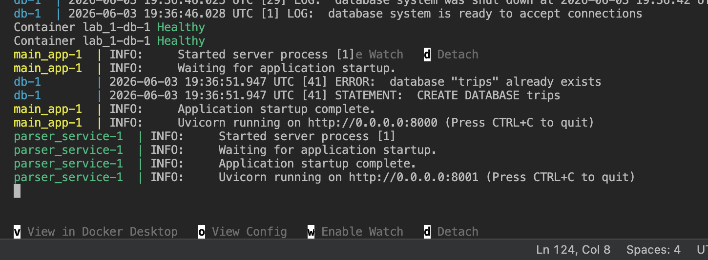
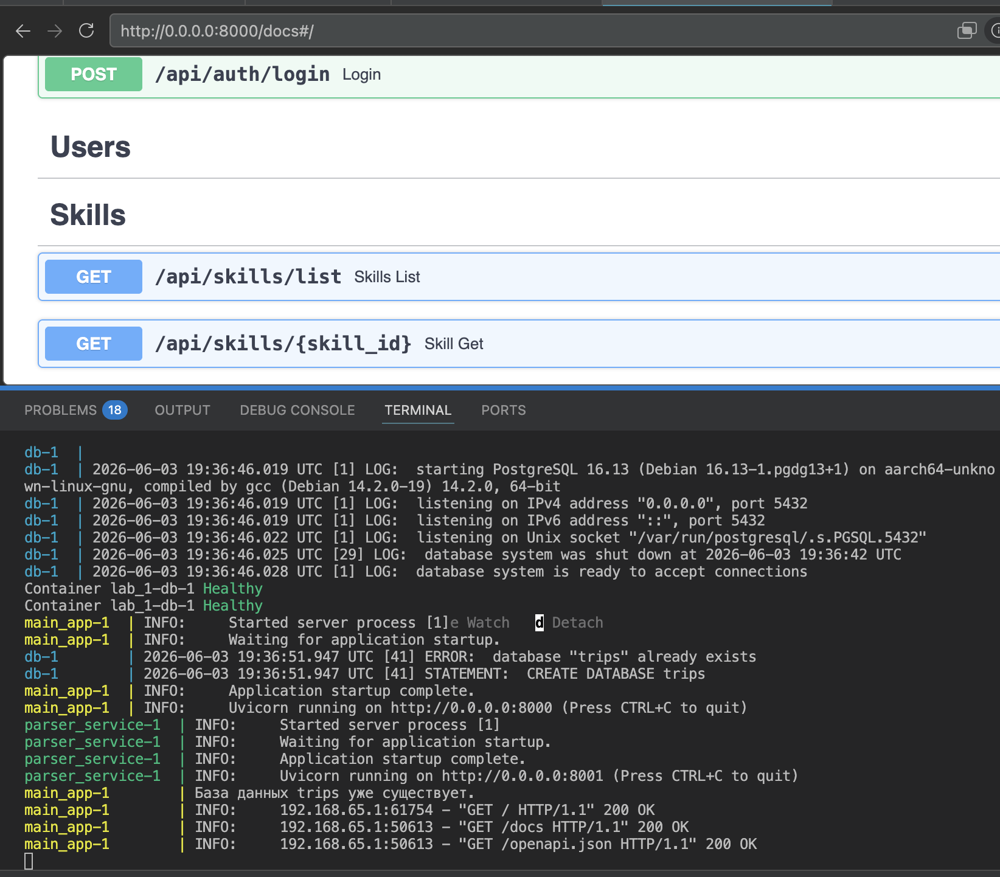
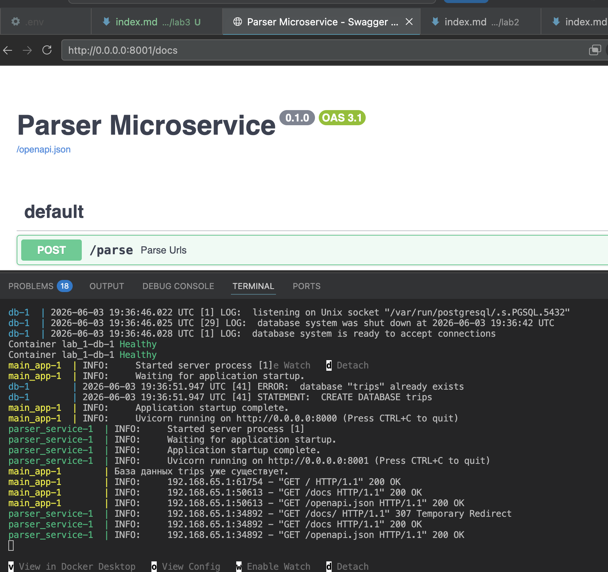
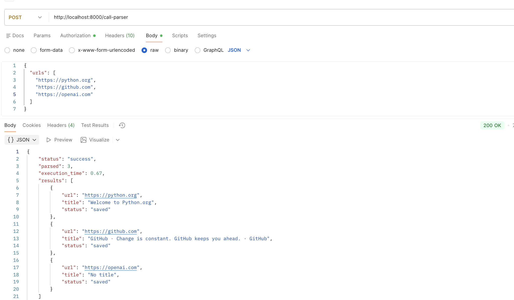
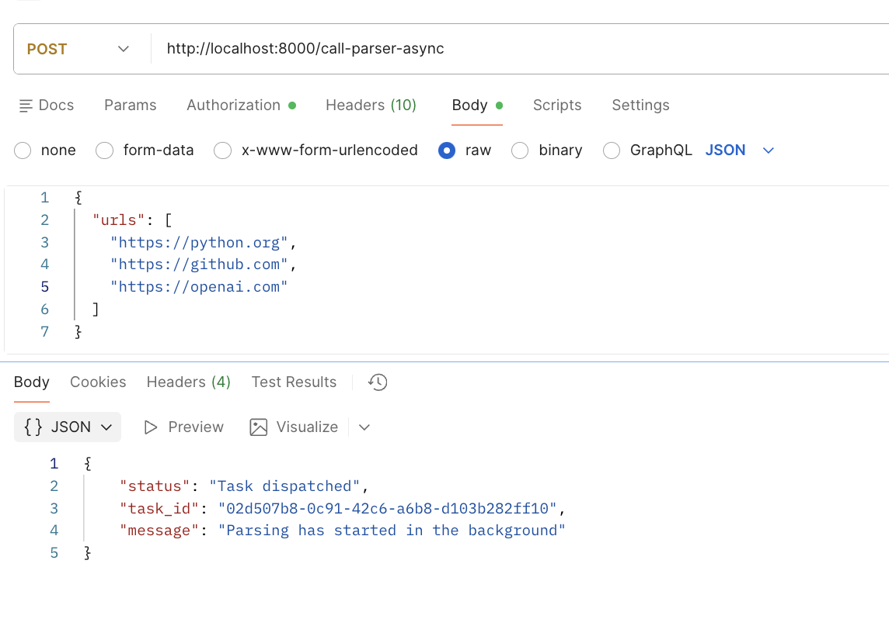
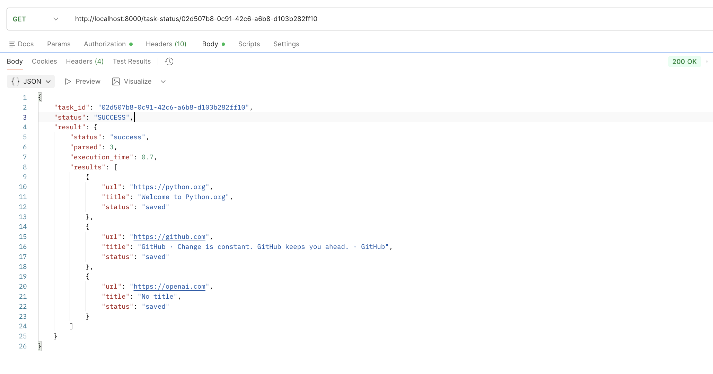
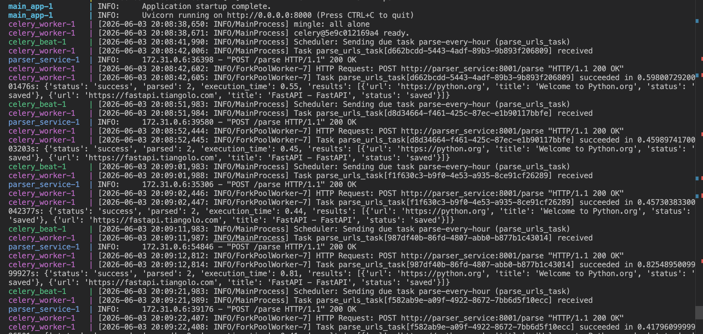

Лабораторная работа 3. Упаковка FastAPI приложения в Docker, Работа с источниками данных и Очереди
Цель работы: Научиться упаковывать FastAPI приложение в Docker, интегрировать парсер данных с базой данных и вызывать парсер через API и очередь.
Подзадача 1: Упаковка FastAPI приложения, базы данных и парсера данных в Docker
parser_app.py
import asyncio
import time
import aiohttp
from bs4 import BeautifulSoup
from fastapi import FastAPI
from sqlmodel import SQLModel
from sqlalchemy.ext.asyncio import create_async_engine, AsyncSession
from sqlalchemy.orm import sessionmaker
from models import Skill
from schemas import ParseRequest
from dotenv import load_dotenv
import os
load_dotenv()
DB_USER = os.getenv('DB_USER')
DB_PASS = os.getenv('DB_PASS')
DB_HOST = os.getenv('DB_HOST')
DB_NAME = os.getenv('DB_NAME')
DATABASE_URL = (
f"postgresql+asyncpg://{DB_USER}:{DB_PASS}"
f"@{DB_HOST}:5432/{DB_NAME}"
)
engine = create_async_engine(DATABASE_URL)
AsyncSessionLocal = sessionmaker(
engine,
class_=AsyncSession,
expire_on_commit=False
)
app = FastAPI(title="Parser Microservice")
semaphore = asyncio.Semaphore(5)
async def parse_and_save(client, url: str):
async with semaphore:
try:
async with client.get(url) as response:
html = await response.text()
soup = BeautifulSoup(html, "html.parser")
title = soup.title.string.strip() if soup.title else "No title"
skill = Skill(
title=title + " [async]",
description=f"Parsed from {url}"
)
async with AsyncSessionLocal() as session:
session.add(skill)
await session.commit()
return { "url": url, "title": title, "status": "saved"}
except Exception as e:
return {"url": url, "status": "error", "error": str(e)}
@app.post("/parse")
async def parse_urls(data: ParseRequest):
start_time = time.time()
timeout = aiohttp.ClientTimeout(total=10)
async with aiohttp.ClientSession(timeout=timeout) as client:
tasks = [asyncio.create_task(parse_and_save(client, url)) for url in data.urls]
results = await asyncio.gather(*tasks)
execution_time = round(time.time() - start_time, 2)
return {
"status": "success",
"parsed": len(results),
"execution_time": execution_time,
"results": results
}
@app.on_event("startup")
async def on_startup():
pass
Dockerfile
FROM python:3.12-slim
WORKDIR /app
RUN apt-get update && apt-get install -y --no-install-recommends \
build-essential \
&& rm -rf /var/lib/apt/lists/*
COPY requirements.txt .
RUN pip install --no-cache-dir -r requirements.txt
COPY . .
docker-compose.yml
version: '3.9'
services:
# Сервис базы данных
db:
image: postgres:16
restart: always
environment:
POSTGRES_USER: ${DB_USER}
POSTGRES_PASSWORD: ${DB_PASS}
POSTGRES_DB: ${DB_NAME}
ports:
- "5432:5432"
volumes:
- postgres_data:/var/lib/postgresql/data
env_file:
- .env
healthcheck:
test: ["CMD-SHELL", "pg_isready -U ${DB_USER} -d ${DB_NAME}"]
interval: 5s
timeout: 5s
retries: 5
main_app:
build: .
restart: always
command: uvicorn main:app --host 0.0.0.0 --port 8000
ports:
- "8000:8000"
env_file:
- .env
depends_on:
db:
condition: service_healthy
parser_service:
build: .
restart: always
command: uvicorn parser_app:app --host 0.0.0.0 --port 8001
ports:
- "8001:8001"
env_file:
- .env
depends_on:
db:
condition: service_healthy
volumes:
postgres_data:
Докер успешно запущен, оба сервиса работают:



Подзадача 2: Вызов парсера из FastAPI
Создадим эндпоинт для вызова парсера в основном приложении main.py
@app.post("/call-parser")
async def call_parser_endpoint(data: ParseRequest):
"""
Эндпоинт, который принимает список URL и пересылает их микросервису-парсеру
"""
async with httpx.AsyncClient() as client:
try:
response = await client.post(
PARSER_SERVICE_URL,
json={"urls": data.urls},
timeout=10.0
)
response.raise_for_status()
return response.json()
except httpx.ConnectError:
raise HTTPException(status_code=503, detail="Parser service is unavailable")
except httpx.HTTPStatusError as e:
raise HTTPException(status_code=e.response.status_code, detail=e.response.text)
except Exception as e:
raise HTTPException(status_code=500, detail=str(e))
Вызов парсера из основного приложения:

Подзадача 3: Celery и Redis
celery_app.py
import os
import time
import asyncio
from celery import Celery
import httpx
REDIS_URL = os.getenv("REDIS_URL", "redis://redis:6379/0")
celery_app = Celery(
"worker",
broker=REDIS_URL,
backend=REDIS_URL
)
celery_app.conf.task_serializer = 'json'
celery_app.conf.result_serializer = 'json'
celery_app.conf.accept_content = ['json']
celery_app.conf.result_expires = 3600
@celery_app.task(name="parse_urls_task")
def parse_urls_task(urls: list):
PARSER_URL = "http://parser_service:8001/parse"
with httpx.Client(timeout=60.0) as client:
response = client.post(PARSER_URL, json={"urls": urls})
return response.json()
В main.py добавлены два новых эндпоинта: первый ставит задачу в очередь и сразу возвращает ID, второй показывает статус и результат по задаче
main.py
@app.post("/call-parser-async")
async def call_parser_async(data: ParseRequest):
task = parse_urls_task.delay(data.urls)
return {
"status": "Task dispatched",
"task_id": task.id,
"message": "Parsing has started in the background"
}
@app.get("/task-status/{task_id}")
async def get_task_status(task_id: str):
task_result = AsyncResult(task_id, app=celery_app)
result = {
"task_id": task_id,
"status": task_result.status,
}
if task_result.status == 'SUCCESS':
result["result"] = task_result.result # То, что вернула функция parse_urls_task
elif task_result.status == 'FAILURE':
result["error"] = str(task_result.info)
return result
И обновим docker-compose.yml: добавим Redis и сам процесс воркера (Celery).


Подзадача 4: Настройка переодических задач с Celery
Добавим расписание (beat schedule) в конфигурацию Celery. (celery_app.py)
celery_app.conf.beat_schedule = {
'parse-every-hour': {
'task': 'parse_urls_task',
'schedule': 3600.0,
'args': (['https://python.org', 'https://fastapi.tiangolo.com'],)
},
}
celery_app.conf.timezone = 'UTC'
Для периодических задач нужно запустить отдельный процесс celery beat. Он не выполняет сами задачи, он только дает воркеру их начать.
celery_beat:
build: .
command: celery -A celery_app beat --loglevel=info
depends_on:
redis:
condition: service_started
env_file:
- .env
